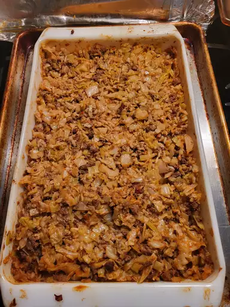

Cabbage Roll Casserole

Una apetecible olla de Cabbage roll Casserole llena
- 2 pounds ground beef
- 3 and half, pounds chopped cabbage
- 1(29 ounce) can tomato sauce
- 1 cup chopped onion
- 1 cup uncooked white rice
- 1 teaspoon salt
- 2(14 ounce) cans beef broth
- Preheat the oven to 350 degrees F(175 degrees C)
- Heat a large skillet over medium-high heat. Cook and stir ground beef inthe hot skillet until browned and crumbly, 5 to 7 minutes. Drain and discard grease
- Combine cabbage, tomato sauce, onion, rice, and salt-in larg mixing bowl. Stir in cooked ground beef. Pour mixture into a 9x13-inch baking dish, then pout beef broth over top
- Cover and baker in the preheated oven for 1 hour. Stir, re-cover, and bake until cabbage is tender and rice is done, 20 to 30 minutes more